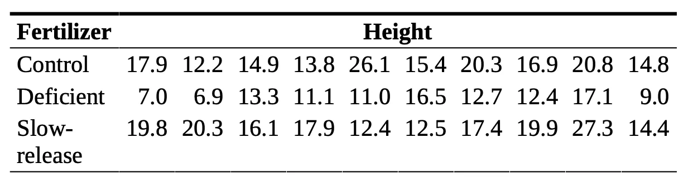
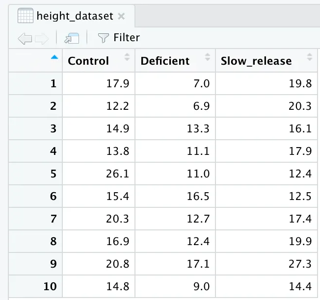
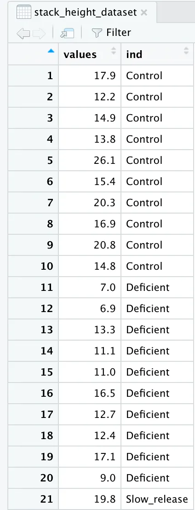
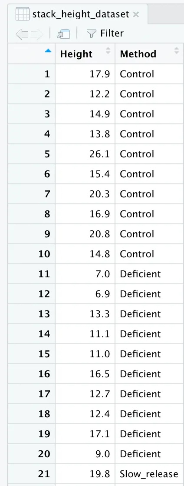
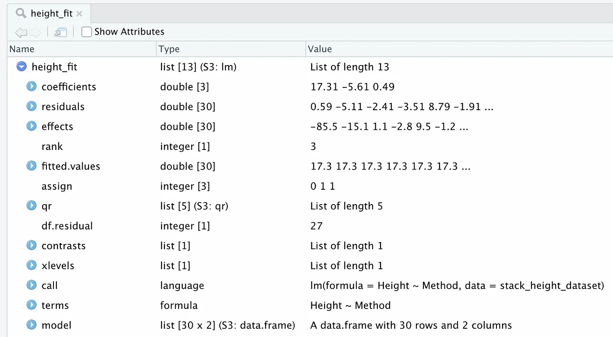

Creating One-Factor ANOVA Tables in R
” 'interaction' in contingency tables enjoys only a few of the fortuitously simple properties of interactions in the analysis of variance.”
- John Darroch
Getting started
Creating ANOVA tables can help us better understand the relationship and interactions between variables. However, creating the ANOVA table can pose some difficulties. The purpose of this blog post is to help you create one-factor ANOVA tables in R quickly, easily, and without any extra packages!
Motivating Examples
I want to start this off with an example from the article “Nutrient Deprivation Improves Field Performance of Woody Seedlings in a Degraded Semi-arid Shrubland” (R. Trubata, J. Cortina, and A. Vilagrosaa, Ecological Engineering, 2011:1164–1173). One part of this article looks at the effect of three different types of fertilizers on the height of a specific Mediterranean tree species. One experiment the group conducts takes three samples of 10 different trees, with each sample being grown with a different fertilizer. One group—the control group—was grown with a standard fertilizer, a second group was grown with a fertilizer that contained half the nutrients of the standard fertilizer, and the third group was grown using a commercial slow-release fertilizer. After one year, the heights of the trees were measured and are listed in the following table.
This leads us to our research question: does fertilizer type affect the height of these Mediterranean trees?
One statistical tool we can use to analyze the data and figure out the answer to our research question is called
Calculating ANOVA Tables in R
Everything I am doing in the following steps can be done in the terminal of R.
- The first thing we need to do is read in our data.
- Next, we want to put these variables into a dataframe
- To help prepare the data for the ANOVA table, we will want to stack the data together using the
stack()function - To make things easier for later, rename the column headers to accurately represent what the columns are showing.
- With our renamed column headers, we will now want to turn our data frame into a linear model using the
lm()function in R.
Control <- c(17.9, 12.2, 14.9, 13.8, 26.1, 15.4, 20.3, 16.9, 20.8, 14.8)
Deficient <- c(7.0, 6.9, 13.3, 11.1, 11.0, 16.5, 12.7, 12.4, 17.1, 9.0)
Slow_release <- c(19.8, 20.3, 16.1, 17.9, 12.4, 12.5, 17.4, 19.9, 27.3, 14.4)
height_dataset <- data.frame(Control, Deficient, Slow_release)
This will give us a nice data frame that looks like this:
stack_height_dataset <- stack(height_dataset)
When we stack our dataset together, we see that our data frame turns into a two column frame where the first column has the heights, and the second column as the three types of fertilizer. But, the column headers do not fully represent this.
names(stack_height_dataset) <- c("Height", "Method")
If we look at our data frame again, we will see that the column headers are renamed and accurately represent what we are looking at.
height_fit <- lm(Height~Method, data=stack_height_dataset)
If you look at our newly created height_fit linear model, we see a few weird things. Do not worry too much about this. This is all information that our next step requires.
- Final step! All of our data preparation has brought us up to this point! All we need to do is pass our
height_fit linear model into the anova() function that R provides.anova(height_fit)
When you run this function, R will automatically output the ANOVA table will all the information we need!
Analysis of Variance Table
Response: Height
Df Sum Sq Mean Sq F value Pr(>F)
Method 2 229.74 114.870 7.0587 0.00342 **
Residuals 27 439.39 16.274
---
Signif. codes: 0 ‘***’ 0.001 ‘**’ 0.01 ‘*’ 0.05 ‘.’ 0.1 ‘ ’ 1
Conclusion
That is it! If you recall our original research question, we wanted to know if fertilizer type impacts the height of these trees. If you recall from your statistics class, we compare the p-value with our significance value, $\alpha$. In this case, we used a significance $\alpha$ = 0.05 (which is pretty standard). Looking at our ANOVA table, we see that our p-value = 0.00342. Comparing our p-value and our significance level, we see that p-value = 0.00342 < 0.05 = $\alpha$, so we reject the null hypothesis and conclude that the fertilizer does have an impact on the height of these Mediterranean trees!
(If you are interested in finding the critical value of our experiment to compare with the F-value found on our ANOVA table, use the R function qf(). All you need is a significance level (1-$\alpha$), df1, and df2 where df1 is the degrees of freedom of the Method, and df2 is the degrees of freedom of the Residuals (simply look at the Df column of our ANOVA table).)
And that is it! Creating One-Factor ANOVA tables in R is super easy! Make sure to check out the original study that inspired our motivating example, and the textbook that helped provide the data table for our experiment!
Example Fully Worked Out
Here is a picture of the full code in an R console.
Here is a code block of the full code in an R console.
> Control <- c(17.9, 12.2, 14.9, 13.8, 26.1, 15.4, 20.3, 16.9, 20.8, 14.8)
> Deficient <- c(7.0, 6.9, 13.3, 11.1, 11.0, 16.5, 12.7, 12.4, 17.1, 9.0)
> Slow_release <- c(19.8, 20.3, 16.1, 17.9, 12.4, 12.5, 17.4, 19.9, 27.3, 14.4)
>
> height_dataset <- data.frame(Control, Deficient, Slow_release)
> View(height_dataset)
> stack_height_dataset <- stack(height_dataset)
>
> names(stack_height_dataset) <- c("Height", "Method")
>
> height_fit <- lm(Height~Method, data=stack_height_dataset)
>
> anova(height_fit)
Analysis of Variance Table
Response: Height
Df Sum Sq Mean Sq F value Pr(>F)
Method 2 229.74 114.870 7.0587 0.00342 **
Residuals 27 439.39 16.274
---
Signif. codes: 0 ‘***’ 0.001 ‘**’ 0.01 ‘*’ 0.05 ‘.’ 0.1 ‘ ’ 1